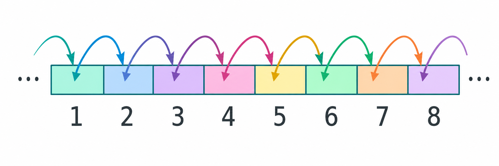
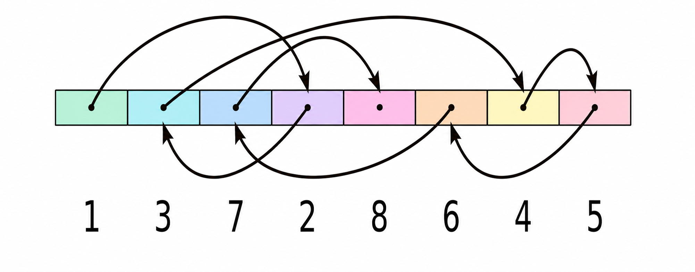

🔹 Formas de acceso a un fichero¶
El acceso a ficheros es una tarea fundamental en la programación, ya que permite leer y escribir datos persistentes. En Kotlin, utilizando las bibliotecas de Java (java.io y java.nio), se pueden manejar diferentes tipos de ficheros (texto, binarios, imágenes...), según sus características y necesidades, y según su forma de acceder a ellos.
Existen dos formas principales de acceder a un fichero:
Acceso secuencial
- Los datos se procesan en orden, desde el principio hasta el final del fichero.
- Es el más común y sencillo.
- Se usa cuando se desea leer todo el contenido o recorrer registro por registro, por ejemplo la lectura de un archivo de texto línea por línea, o de un fichero binario estructurado registro a registro.

Acceso aleatorio
- Permite saltar a una posición concreta del fichero sin necesidad de leer lo anterior.
- Es útil cuando los registros tienen un tamaño fijo y se necesita eficiencia (por ejemplo, ir directamente al registro 100).
- Requiere técnicas más avanzadas como el uso de FileChannel, SeekableByteChannel o RandomAccessFile.

🧠 Comprueba tu comprensión
- Si tienes que buscar una palabra específica leyendo un documento línea a línea desde el principio, ¿qué tipo de acceso estás utilizando?
- ¿Qué característica suelen tener los datos en un fichero para que el acceso aleatorio sea realmente eficiente al saltar a un registro concreto?
Ver respuestas
- Acceso secuencial. Los datos se procesan en el orden en que están escritos, desde el inicio.
- Los registros suelen tener un tamaño fijo. Esto permite calcular matemáticamente la posición exacta (offset) a la que saltar, sin necesidad de leer lo anterior.